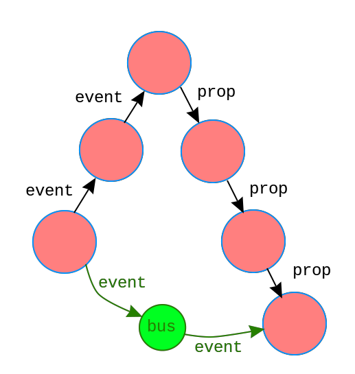

Иногда иерархическая структура становится слишком сложной -- например, требуется передать данные от одного потомка второго уровня другому потомку третьего уровня.

В таком случае более простым решением будет передача данных через глобальную шину событий (bus) -- независимый экземпляр Vue, используемый исключительно для передачи данных.
// создаем шину до создания корневого экземпляра Vue
var bus = new Vue()
// в методе компонента A
// id-selected -- имя события, уникальное для шины
// 1 -- передаваемые данные
bus.$emit('id-selected', 1)
// в обработчике created компонента B
bus.$on('id-selected', function (id) {
// ...
})